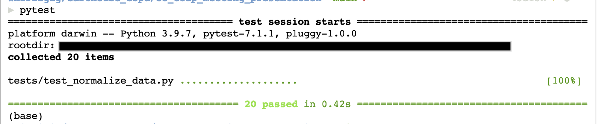
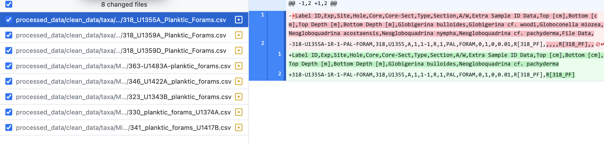

Data Cleaning with Pandas and Jupyter Notebooks¶
Author(s)¶
Author1 = {“name”: “Wai-Yin Kwan”, “affiliation”: “Whirl-i-Gig”, “email”: “wyk@whirl-i-gig.com”, “orcid”: “0000-0001-6113-0210”}
Table of Contents
- 1 Data Cleaning with Pandas and Jupyter Notebooks
- 2 Setup
- 3 Best practices and processing notes
- 4 Data processing and analysis
- 5 References
Purpose¶
Since its inception in the 1960s, the International Ocean Discovery Program (IODP) and its predecessors have recovered sediment cores from ocean basins around the world. The cores provide an extensive amount of information about microorganism fossils and lithologies spanning millions of years. Current challenges to using the scientific ocean drilling (SOD) data include: datasets are stored in different databases with different formats, databases have limited search capabilities, and no one database has all the SOD data.
The extending Ocean Drilling Pursuits (eODP) project aims to standardized SOD data from several sources into one standardize database structure. The standardized data is then added to the Paleobiology Database (paleobiodb.org) and Macrostrat (macrostrat.org) to make the data easily accessible to researchers. This notebook demonstrates how the eODP team uses Jupyter notebooks to clean and standardize 50+ years of SOD data. This notebook is developed for Python 3.8+ and Jupyter Lab.
Technical contributions¶
Demonstration of how to create a reproducible data cleaning workflow using Git, unit testing, directory organization, and modular code.
Methodology¶
For eODP, we use multiple notebooks to clean and standardize over 10,000 CSVs of ocean core data. For this presentation, we are using one notebook to clean just 10 files.
For each data cleaning step we created: separate sections in this notebook, data cleaning functions in scripts/normalize_data.py, and unit tests in test/test_normalize_data.py
Results¶
By making the raw data, processed data, and data cleaning code available, we hope to give ocean core drilling researchers the ability review our data cleaning process and customize the data cleaning steps if so desired. We also hope researchers can apply ideas and tips from our data cleaning process to their own datasets.
Funding¶
Award1 = {“agency”: “US National Science Foundation”, “award_code”: “1928362”, “award_URL”: “https://www.nsf.gov/awardsearch/showAward?AWD_ID=1928362 “}
Keywords¶
Include up to 5 keywords, using the template below.
keywords=[“data cleaning”, “reproducibility”, “version control”, “testing”]
Citation¶
Wai-Yin Kwan, 2021. Data Cleaning with Pandas and Jupyter Notebooks. Accessed 5/30/2022 at https://github.com/wykhuh/ec_eodp_demo
Acknowledgements¶
The template is licensed under a Creative Commons Attribution 4.0 International License.
Setup¶
Directory structure¶
notebooks: Jupyter notebooks
processed_data: processed data files
raw_data: raw, unprocessed data files
scripts: custom data cleaning scripts
tests: unit tests written in pytest
Library import¶
# Data manipulation
import pandas as pd
# handle file system
from pathlib import Path
Local library import¶
# Include local library paths
import sys
sys.path.append(str(Path.cwd().parent))
# Import local libraries
from scripts.normalize_data import (
normalize_columns,
remove_bracket_text,
remove_whitespace,
normalize_expedition_section_cols,
print_df
)
Set file path variables¶
We store the file paths as variables so that can access the paths in multiple data cleaning steps.
normalized_nontaxa_path = Path('..', 'processed_data', 'normalized_nontaxa_list.csv')
normalized_taxa_path = Path('..', 'processed_data', 'normalized_taxa_list.csv')
taxa_list_path = Path('..', 'processed_data', 'drafts', 'taxa_list.csv')
nontaxa_list_path = Path('..', 'processed_data', 'drafts', 'nontaxa_list.csv')
# Use `Path` and `rglob` to get all the CSVs in `clean_data/taxa` directory.
paths = list(Path('..', 'processed_data', 'clean_data', 'taxa').rglob('*.csv'))
len(paths)
10
Best practices and processing notes¶
Use conda to manage dependencies and virtual environments¶
The package versions are stored environmental.yml so that when other people run the code, they will install the same packages.
We use virtual environments to avoid dependency conflicts with other projects.
Version Control / Git¶
We use git to track changes in the code and data files.
We found it helpful to make a commit after each data cleaning step in order to make it easier keep track of the data cleaning steps, and undo the certain steps if needed. To undo a data cleaning step that hasn’t been committed, use git restore. To undo a data cleaning step that has been committed, use git revert, git reset --hard, or get rebase.
Unit testing¶
We wrote unit tests for the data cleaning functions in order to reduce the chances that our data cleaning steps would alter the data files in unexpected ways. The tests are in the ./tests directory. We used pytest for the unit tests.
Since we use the same data cleaning functions in multiple notebooks, we created a separate tests directory instead of putting the tests inside the notebooks.
To run the tests, use pytest from the command line. All green dots and [100%] means all the tests passed.

Changes to data files are done in code¶
In order to make the data cleaning process reproducible, all the changes to the processed data files are done in code. We do not manually edit the processed files.
Read files¶
We used pandas.read_csv(path, dtype=str) to read csv and treat all columns as strings. The reason why we used dtype=str is because pandas.read_csv(path) will automatically convert the columns to strings, integers, floats, dates. This automatic conversion can change values in unexpected ways such as converting a column with integers and NaN into floats and NaN.
Example¶
path = paths[4]
We use dtype=str so that the column has correct integer values.
df = pd.read_csv(path, nrows=5 , dtype=str)
df['Pulleniatina coiling (dextral)']
0 NaN
1 20
2 NaN
3 23
4 35
Name: Pulleniatina coiling (dextral), dtype: object
If we don’t include dtype, the columns has incorrect float values. pandas automatically converts the integers to floats because of NaNs.
df = pd.read_csv(path, nrows=5)
df['Pulleniatina coiling (dextral)']
0 NaN
1 20.0
2 NaN
3 23.0
4 35.0
Name: Pulleniatina coiling (dextral), dtype: float64
Viewing the dataframe¶
One thing that we found helpful when data cleaning is to view the dataframe and the total number of rows and columns to check the changes in the dataframe.
print_df is a custom function that calls pd.DataFrame.shape and pd.DataFrame.head()
path = paths[4]
df = pd.read_csv(path, dtype=str)
print_df(df)
(23, 23)
| Sample | Top [cm] | Bottom [cm] | Top Depth [m] | Bottom Depth [m] | Datum name | Zone name (short) | Zone name | Preservation | Group abundance | ... | Globorotalia flexuosa | Globorotalia hessi | Globorotalia tosaensis | Globorotalia tumida | Neogloboquadrina acostaensis (dextral) | Neogloboquadrina humerosa | Pulleniatina coiling (dextral) | Pulleniatina coiling (sinistral) | Pulleniatina finalis | Sphaeroidinella dahiscens sensu lato | |
|---|---|---|---|---|---|---|---|---|---|---|---|---|---|---|---|---|---|---|---|---|---|
| 0 | 362-U1480E-1H-CC-PAL-FORAM_CHEN | 0 | 5 | 7.71 | 7.76 | NaN | NaN | NaN | P [P43] | R [A101] | ... | NaN | NaN | NaN | R [A102] | NaN | R [A102] | NaN | NaN | NaN | R [A102] |
| 1 | 362-U1480E-2H-CC-PAL-FORAM_CHEN | 0 | 5 | 17.54 | 17.59 | NaN | NaN | NaN | P [P43] | A [A101] | ... | R [A102] | NaN | NaN | A [A102] | NaN | R [A102] | 20 | 0 | R [A102] | A [A102] |
| 2 | 362-U1480E-3H-1-W 130/132-FORAM_CHEN | 0 | 2 | 18.6 | 18.62 | NaN | NaN | NaN | P [P43] | R [A101] | ... | NaN | F [A102] | NaN | C [A102] | NaN | F [A102] | NaN | NaN | NaN | A [A102] |
| 3 | 362-U1480E-3H-2-W 70/72-FORAM_CHEN | 0 | 2 | 19.5 | 19.52 | T Globorotalia tosaensis (Gradstein et al., 2012) | PT1a [AO12] | Globigerinoides fistulosus (Anthonissen and Og... | P [P43] | A [A101] | ... | NaN | C [A102] | R [A102] | A [A102] | NaN | NaN | 23 | 0 | R [A102] | F [A102] |
| 4 | 362-U1480E-3H-3-W 130/132-FORAM_CHEN | 0 | 2 | 21.6 | 21.62 | T Neogloboquadrina acostaensis (Gradstein et a... | PT1a [AO12] | Globigerinoides fistulosus (Anthonissen and Og... | M [P43] | A [A101] | ... | R [A102] | NaN | R [A102] | A [A102] | F [A102] | F [A102] | 35 | 12 | F [A102] | NaN |
5 rows × 23 columns
Basic cleanup pattern¶
For each data cleanup step, we loop over all the files, create a dataframe for each file, execute some code to clean the data, and then save the revised file.
for path in paths:
df = pd.read_csv(path, dtype=str)
# code to change file
df.to_csv(path, index=False)
View the changed files¶
After each cleanup step, we use the desktop application Github Desktop to spot check the changes to the files.
If the files look ok, make a commit. If the data cleaning step did not act as expected, undo the changes in the data files using git restore, update the data cleaning function and the tests, and rerun the data cleaning step.
The screenshot below shows the changes to Micropal_CSV_1/318_U1355A_Planktic_Forams.csv

Data processing and analysis¶
There are many steps needed to clean up the data files.
Basic file cleanup¶
pandas has methods that can be used to do some basic file cleanup.
delete dataframe column if all values are NA
dropna(axis=’columns’, how=’all’, inplace=True) - pandas.DataFrame.dropnadelete dataframe row if all values are NA
dropna(axis=’index’, how=’all’, inplace=True) - pandas.DataFrame.dropnaremove duplicate rows in dataframe
drop_duplicates(inplace=True) - pandas.DataFrame.drop_duplicates
Before cleanup¶
The file has 20 rows and 41 columns.
path = paths[7]
df = pd.read_csv(path, dtype=str)
print_df(df)
(20, 41)
| Sample | Exp | Site | Hole | Core | Core-Sect | Type | Section | A/W | Top [cm] | ... | Neogloboquadrina pachyderma (sinistral) | Neogloboquadrina pachyderma (dextral) | Neogloboquadrina pachyderma A (dextral, inflated form) | Neogloboquadrina pachyderma B (sinistral, inflated form) | Neogloboquadrina pachyderma C (sinistral, compressed form) | Orbulina universa | Comments | Ship File Links | Shore File Links | File Data | |
|---|---|---|---|---|---|---|---|---|---|---|---|---|---|---|---|---|---|---|---|---|---|
| 0 | 341-U1417B-2H-CC-PAL | 341 | U1417 | B | 2 | 2-CC | H | CC | PAL | 0 | ... | D [A84] | R [A84] | NaN | R [A84] | NaN | NaN | NaN | NaN | NaN | NaN |
| 1 | 341-U1417B-4H-CC-PAL | 341 | U1417 | B | 4 | 4-CC | H | CC | PAL | 0 | ... | D [A84] | R [A84] | NaN | NaN | NaN | NaN | sandy | NaN | NaN | NaN |
| 2 | 341-U1417B-6H-CC-PAL | 341 | U1417 | B | 6 | 6-CC | H | CC | PAL | 0 | ... | D [A84] | NaN | NaN | NaN | NaN | NaN | diatom ooze. pyritilize foram | NaN | NaN | NaN |
| 3 | 341-U1417B-9H-CC-PAL | 341 | U1417 | B | 9 | 9-CC | H | CC | PAL | 0 | ... | NaN | NaN | NaN | NaN | NaN | NaN | Rich in sandy terrigenous grains with presence... | NaN | NaN | NaN |
| 4 | 341-U1417B-10H-CC-PAL | 341 | U1417 | B | 10 | 10-CC | H | CC | PAL | 0 | ... | D [A84] | R [A84] | NaN | NaN | NaN | NaN | Rich in planktic foraminifers, pebbles, pyrite | NaN | NaN | NaN |
5 rows × 41 columns
After cleanup¶
The number of rows changed from 20 to 17, and the number of columns changed from 41 to 26.
df.dropna(axis='columns', how='all', inplace=True)
df.dropna(axis='index', how='all', inplace=True)
df.drop_duplicates(inplace=True)
print_df(df)
(17, 26)
| Sample | Exp | Site | Hole | Core | Core-Sect | Type | Section | A/W | Top [cm] | ... | Preservation | Group abundance | Globigerina umbilicata | Globigerinita glutinata | Neogloboquadrina inglei | Neogloboquadrina kagaensis | Neogloboquadrina pachyderma (sinistral) | Neogloboquadrina pachyderma (dextral) | Neogloboquadrina pachyderma B (sinistral, inflated form) | Comments | |
|---|---|---|---|---|---|---|---|---|---|---|---|---|---|---|---|---|---|---|---|---|---|
| 0 | 341-U1417B-2H-CC-PAL | 341 | U1417 | B | 2 | 2-CC | H | CC | PAL | 0 | ... | G [P15] | R [A83] | D [A84] | R [A84] | NaN | NaN | D [A84] | R [A84] | R [A84] | NaN |
| 1 | 341-U1417B-4H-CC-PAL | 341 | U1417 | B | 4 | 4-CC | H | CC | PAL | 0 | ... | G [P15] | C [A61] | A [A84] | P [A84] | NaN | NaN | D [A84] | R [A84] | NaN | sandy |
| 2 | 341-U1417B-6H-CC-PAL | 341 | U1417 | B | 6 | 6-CC | H | CC | PAL | 0 | ... | P [P15] | P [A83] | D [A84] | NaN | NaN | NaN | D [A84] | NaN | NaN | diatom ooze. pyritilize foram |
| 3 | 341-U1417B-9H-CC-PAL | 341 | U1417 | B | 9 | 9-CC | H | CC | PAL | 0 | ... | NaN | B [A83] | NaN | NaN | NaN | NaN | NaN | NaN | NaN | Rich in sandy terrigenous grains with presence... |
| 4 | 341-U1417B-10H-CC-PAL | 341 | U1417 | B | 10 | 10-CC | H | CC | PAL | 0 | ... | G [P15] | A [A83] | D [A84] | P [A84] | P [A84] | NaN | D [A84] | R [A84] | NaN | Rich in planktic foraminifers, pebbles, pyrite |
5 rows × 26 columns
Clean up all files and save the changes¶
Do basic file cleanup on all the files.
for path in paths:
df = pd.read_csv(path, dtype=str)
df.dropna(axis='columns', how='all', inplace=True)
df.dropna(axis='index', how='all', inplace=True)
df.drop_duplicates(inplace=True)
df.to_csv(path, index=False)
Remove leading and trailing white spaces¶
We created a custom function remove_whitespace to remove all leading and trailing white spaces from both the headers and row values.
Since we wanted to remove white spaces from both the headers and row values, we used read_csv(header=None) and to_csv(header=False) so that pandas treat the first row like any other row.
Before cleanup¶
df = pd.read_csv(paths[0], dtype=str, header=None)
print_df(df)
(2, 16)
| 0 | 1 | 2 | 3 | 4 | 5 | 6 | 7 | 8 | 9 | 10 | 11 | 12 | 13 | 14 | 15 | |
|---|---|---|---|---|---|---|---|---|---|---|---|---|---|---|---|---|
| 0 | Label ID | Exp | Site | Hole | Core | Core-Sect | Type | Section | A/W | Extra Sample ID Data | Top [cm] | Bottom [cm] | Top Depth [m] | Bottom Depth [m] | Globigerina bulloides | Neogloboquadrina cf. pachyderma |
| 1 | 318-U1355A-1R-1-PAL-FORAM | 318 | U1355 | A | 1 | 1-1 | R | 1 | PAL | FORAM | 0 | 1 | 0 | 0.01 | R[318_PF] | R[318_PF] |
After cleanup¶
df = pd.read_csv(paths[0], dtype=str, header=None)
remove_whitespace(df)
print_df(df)
(2, 16)
| 0 | 1 | 2 | 3 | 4 | 5 | 6 | 7 | 8 | 9 | 10 | 11 | 12 | 13 | 14 | 15 | |
|---|---|---|---|---|---|---|---|---|---|---|---|---|---|---|---|---|
| 0 | Label ID | Exp | Site | Hole | Core | Core-Sect | Type | Section | A/W | Extra Sample ID Data | Top [cm] | Bottom [cm] | Top Depth [m] | Bottom Depth [m] | Globigerina bulloides | Neogloboquadrina cf. pachyderma |
| 1 | 318-U1355A-1R-1-PAL-FORAM | 318 | U1355 | A | 1 | 1-1 | R | 1 | PAL | FORAM | 0 | 1 | 0 | 0.01 | R[318_PF] | R[318_PF] |
Clean up all files and save the changes¶
Remove white space from all files.
for path in paths:
df = pd.read_csv(path, dtype=str, header=None)
remove_whitespace(df)
df.to_csv(path, index=False, header=False)
Normalizing columns names¶
For the ocean core drilling expedition 312 and later, the researchers for each expedition determined the format of their data files. This resulted in a lot of variability in the file columns. We had to standardized the columns names and update data files. For instance, ‘Bottom [cm]’ and ‘Bottom[cm] [cm]’ in the raw files are ‘Bottom [cm]’ in the processed files.
Another challenge with parsing the files is that we had to standardized the taxa names. Issues include misspelling, taxa names change over time, and inconsistent ways of treating rank modifiers.
Get all unique column names¶
In order to normalize the header header names, we needed to get all the headers for all the files.
Since we only need the header names, use nrow=0 with read_csv.
pd.read_csv(paths[1], dtype=str, nrows=0)
| Sample | Top [cm] | Bottom [cm] | Top Depth [m] | Bottom Depth [m] | Zone name (short) | Zone name | Additional zone name (short) | Additional zone name | Preservation | ... | Globoturborotalita decoraperta _T and B | Globoturborotalita rubescens | Sphaeroidinellopsis seminulina _T_ _PL4 | Sphaeroidinellopsis kochi _T | Globigerinoidesella fistulosa _T and B_ _Pt1a | Globigerinoides ruber _pink_ T | Globigerinoides extremus _T and B | Globigerinoides obliquus _T | Globigerinella calida _B | Sample comment |
|---|
0 rows × 64 columns
We used pandas.DataFrame.columns() and python set to get all the unique columns for all the files.
all_columns = set()
for path in paths:
df = pd.read_csv(path, dtype=str, nrows=0)
all_columns.update(df.columns)
len(all_columns)
158
all_columns
{'A/W',
'Additional zone name',
'Additional zone name (short)',
'Bottom Depth [m]',
'Bottom Depth[m] [m]',
'Bottom [cm]',
'Bottom[cm] [cm]',
'Candeina nitida',
'Comment (general)',
'Comments',
'Core',
'Core-Sect',
'Datum name',
'Dentoglobigerina altispira _T_ _PL5',
'Dentoglobigerina altispira _T_ _PL5_',
'Dextral:Sinistral _P. obliquiloculata_',
'Dextral:Sinistral _P. praecursor_',
'Dextral:Sinistral _P. primalis_',
'Exp',
'Extra Sample ID Data',
'Fragmentation',
'Fragmentation rank [auto-pop]',
'Genus/species (upper zone)',
'Genus/species lower zone)',
'Globigerina bulloides',
'Globigerina cf. woodi',
'Globigerina falconensis',
'Globigerina umbilicata',
'Globigerinella aequilateralis',
'Globigerinella calida',
'Globigerinella calida _B',
'Globigerinella calida _B_',
'Globigerinella obesa',
'Globigerinita glutinata',
'Globigerinita parkerae',
'Globigerinita uvula',
'Globigerinoides bulloideus',
'Globigerinoides conglobatus',
'Globigerinoides extremus _T and B',
'Globigerinoides extremus _T and B_',
'Globigerinoides fistulosus',
'Globigerinoides obliquus _T',
'Globigerinoides obliquus _T_',
'Globigerinoides quadrilobatus',
'Globigerinoides ruber',
'Globigerinoides ruber (pink)',
'Globigerinoides ruber (white)',
'Globigerinoides ruber _pink_ T',
'Globigerinoides ruber _pink_ _T_',
'Globigerinoides sacculifer',
'Globigerinoides sacculifer (without sack)',
'Globigerinoides tenellus',
'Globigerinoides trilobus',
'Globigerinoidesella fistulosa _T and B_ _Pt1a',
'Globigerinoidesella fistulosa _T and B_ _Pt1a_',
'Globoconella miozea',
'Globorotalia (Globoconella) inflata',
'Globorotalia (Globorotalia) tumida tumida',
'Globorotalia (Hirsutella) hirsuta',
'Globorotalia (Hirsutella) scitula',
'Globorotalia (Truncorotalia) crossaformis',
'Globorotalia (Truncorotalia) truncatulinoides',
'Globorotalia anfracta',
'Globorotalia crassaformis',
'Globorotalia crassaformis sensu lato',
'Globorotalia flexuosa',
'Globorotalia flexuosa _T and B_',
'Globorotalia hessi',
'Globorotalia hessi _B_',
'Globorotalia hirsuta',
'Globorotalia inflata',
'Globorotalia limbata _B',
'Globorotalia limbata _B_',
'Globorotalia limbata _T_',
'Globorotalia margaritae _T and B_ _PL3',
'Globorotalia margaritae _T and B_ _PL3_',
'Globorotalia menardii',
'Globorotalia multicamerata _T',
'Globorotalia multicamerata _T_',
'Globorotalia plesiotumida _B_ _M13b_',
'Globorotalia plesiotumida _T',
'Globorotalia plesiotumida _T_',
'Globorotalia pseudomiocenica _T_ _PL6',
'Globorotalia pseudomiocenica _T_ _PL6_',
'Globorotalia scitula',
'Globorotalia tosaensis',
'Globorotalia tosaensis _T and B_ _Pt1b',
'Globorotalia tosaensis _T and B_ _Pt1b_',
'Globorotalia truncatulinoides',
'Globorotalia truncatulinoides _B',
'Globorotalia truncatulinoides _B_',
'Globorotalia tumida',
'Globorotalia tumida _B_ _PL1a_',
'Globoturborotalita apertura _T and B',
'Globoturborotalita apertura _T and B_',
'Globoturborotalita decoraperta _T and B',
'Globoturborotalita decoraperta _T and B_',
'Globoturborotalita rubescens',
'Group Abundance',
'Group abundance',
'Group abundance (%)',
'Hole',
'Label ID',
'Neogloboquadrina acostaensis',
'Neogloboquadrina acostaensis (dextral)',
'Neogloboquadrina cf. pachyderma',
'Neogloboquadrina dutertrei',
'Neogloboquadrina humerosa',
'Neogloboquadrina incompta (dextral)',
'Neogloboquadrina inglei',
'Neogloboquadrina kagaensis',
'Neogloboquadrina nympha',
'Neogloboquadrina pachyderma (dextral)',
'Neogloboquadrina pachyderma (sin)',
'Neogloboquadrina pachyderma (sinistral)',
'Neogloboquadrina pachyderma B (sinistral, inflated form)',
'Neogloboquadrina pachyderma(dex)',
'Orbulina universa',
'PF Preservation',
'Preservation',
'Pulleniatina coiling (dextral)',
'Pulleniatina coiling (sinistral)',
'Pulleniatina finalis',
'Pulleniatina finalis _B',
'Pulleniatina finalis _B_',
'Pulleniatina obliquiloculata',
'Pulleniatina obliquiloculata (D)',
'Pulleniatina praecursor',
'Pulleniatina praespectabilis',
'Pulleniatina primalis _Tand B',
'Pulleniatina primalis _Tand B_',
'Sample',
'Sample comment',
'Section',
'Site',
'Sphaeroidinella dahiscens sensu lato',
'Sphaeroidinella dehiscens',
'Sphaeroidinella dehiscens s.l.',
'Sphaeroidinella dehiscens sensu lato _B_',
'Sphaeroidinellopsis kochi _T',
'Sphaeroidinellopsis kochi _T_',
'Sphaeroidinellopsis seminulina _T_ _PL4',
'Sphaeroidinellopsis seminulina _T_ _PL4_',
'Top Depth [m]',
'Top Depth[m] [m]',
'Top [cm]',
'Top[cm] [cm]',
'Type',
'Type (lower zone)',
'Upper boundary age av. [Ma]',
'Zone author (year)',
'Zone group',
'Zone name',
'Zone name (short)',
'pc_abundance_name_mode',
'pc_fossil_group',
'pc_fossil_name',
'physical_constituent_name'}
We then manually separate taxa names from other headers so that we could do some more processing on the taxa.
taxa_columns = {
'Candeina nitida',
'Dentoglobigerina altispira _T_ _PL5',
'Dentoglobigerina altispira _T_ _PL5_',
'Dextral:Sinistral _P. obliquiloculata_',
'Dextral:Sinistral _P. praecursor_',
'Dextral:Sinistral _P. primalis_',
'Fragmentation rank [auto-pop]',
'Genus/species (upper zone)',
'Genus/species lower zone)',
'Globigerina bulloides',
'Globigerina cf. woodi',
'Globigerina falconensis',
'Globigerina umbilicata',
'Globigerinella aequilateralis',
'Globigerinella calida',
'Globigerinella calida _B',
'Globigerinella calida _B_',
'Globigerinella obesa',
'Globigerinita glutinata',
'Globigerinita parkerae',
'Globigerinita uvula',
'Globigerinoides bulloideus',
'Globigerinoides conglobatus',
'Globigerinoides extremus _T and B',
'Globigerinoides extremus _T and B_',
'Globigerinoides fistulosus',
'Globigerinoides obliquus _T',
'Globigerinoides obliquus _T_',
'Globigerinoides quadrilobatus',
'Globigerinoides ruber',
'Globigerinoides ruber (pink)',
'Globigerinoides ruber (white)',
'Globigerinoides ruber _pink_ T',
'Globigerinoides ruber _pink_ _T_',
'Globigerinoides sacculifer',
'Globigerinoides sacculifer (without sack)',
'Globigerinoides tenellus',
'Globigerinoides trilobus',
'Globigerinoidesella fistulosa _T and B_ _Pt1a',
'Globigerinoidesella fistulosa _T and B_ _Pt1a_',
'Globoconella miozea',
'Globorotalia (Globoconella) inflata',
'Globorotalia (Globorotalia) tumida tumida',
'Globorotalia (Hirsutella) hirsuta',
'Globorotalia (Hirsutella) scitula',
'Globorotalia (Truncorotalia) crossaformis',
'Globorotalia (Truncorotalia) truncatulinoides',
'Globorotalia anfracta',
'Globorotalia crassaformis',
'Globorotalia crassaformis sensu lato',
'Globorotalia flexuosa',
'Globorotalia flexuosa _T and B_',
'Globorotalia hessi',
'Globorotalia hessi _B_',
'Globorotalia hirsuta',
'Globorotalia inflata',
'Globorotalia limbata _B',
'Globorotalia limbata _B_',
'Globorotalia limbata _T_',
'Globorotalia margaritae _T and B_ _PL3',
'Globorotalia margaritae _T and B_ _PL3_',
'Globorotalia menardii',
'Globorotalia multicamerata _T',
'Globorotalia multicamerata _T_',
'Globorotalia plesiotumida _B_ _M13b_',
'Globorotalia plesiotumida _T',
'Globorotalia plesiotumida _T_',
'Globorotalia pseudomiocenica _T_ _PL6',
'Globorotalia pseudomiocenica _T_ _PL6_',
'Globorotalia scitula',
'Globorotalia tosaensis',
'Globorotalia tosaensis _T and B_ _Pt1b',
'Globorotalia tosaensis _T and B_ _Pt1b_',
'Globorotalia truncatulinoides',
'Globorotalia truncatulinoides _B',
'Globorotalia truncatulinoides _B_',
'Globorotalia tumida',
'Globorotalia tumida _B_ _PL1a_',
'Globoturborotalita apertura _T and B',
'Globoturborotalita apertura _T and B_',
'Globoturborotalita decoraperta _T and B',
'Globoturborotalita decoraperta _T and B_',
'Globoturborotalita rubescens',
'Neogloboquadrina acostaensis',
'Neogloboquadrina acostaensis (dextral)',
'Neogloboquadrina cf. pachyderma',
'Neogloboquadrina dutertrei',
'Neogloboquadrina humerosa',
'Neogloboquadrina incompta (dextral)',
'Neogloboquadrina inglei',
'Neogloboquadrina kagaensis',
'Neogloboquadrina nympha',
'Neogloboquadrina pachyderma (dextral)',
'Neogloboquadrina pachyderma (sin)',
'Neogloboquadrina pachyderma (sinistral)',
'Neogloboquadrina pachyderma B (sinistral, inflated form)',
'Neogloboquadrina pachyderma(dex)',
'Orbulina universa',
'Pulleniatina coiling (dextral)',
'Pulleniatina coiling (sinistral)',
'Pulleniatina finalis',
'Pulleniatina finalis _B',
'Pulleniatina finalis _B_',
'Pulleniatina obliquiloculata',
'Pulleniatina obliquiloculata (D)',
'Pulleniatina praecursor',
'Pulleniatina praespectabilis',
'Pulleniatina primalis _Tand B',
'Pulleniatina primalis _Tand B_',
'Sphaeroidinella dahiscens sensu lato',
'Sphaeroidinella dehiscens',
'Sphaeroidinella dehiscens s.l.',
'Sphaeroidinella dehiscens sensu lato _B_',
'Sphaeroidinellopsis kochi _T',
'Sphaeroidinellopsis kochi _T_',
'Sphaeroidinellopsis seminulina _T_ _PL4',
'Sphaeroidinellopsis seminulina _T_ _PL4_',
}
len(taxa_columns)
117
Since both all_columns and taxa_columns are sets, we can subtract them to get the nontaxa headers.
nontaxa_columns = all_columns - taxa_columns
nontaxa_columns
{'A/W',
'Additional zone name',
'Additional zone name (short)',
'Bottom Depth [m]',
'Bottom Depth[m] [m]',
'Bottom [cm]',
'Bottom[cm] [cm]',
'Comment (general)',
'Comments',
'Core',
'Core-Sect',
'Datum name',
'Exp',
'Extra Sample ID Data',
'Fragmentation',
'Group Abundance',
'Group abundance',
'Group abundance (%)',
'Hole',
'Label ID',
'PF Preservation',
'Preservation',
'Sample',
'Sample comment',
'Section',
'Site',
'Top Depth [m]',
'Top Depth[m] [m]',
'Top [cm]',
'Top[cm] [cm]',
'Type',
'Type (lower zone)',
'Upper boundary age av. [Ma]',
'Zone author (year)',
'Zone group',
'Zone name',
'Zone name (short)',
'pc_abundance_name_mode',
'pc_fossil_group',
'pc_fossil_name',
'physical_constituent_name'}
len(nontaxa_columns)
41
Create taxa and non-taxa files¶
We saved the the taxa and nontaxa headers to csv so that we can further process them.
taxa_df = pd.DataFrame(taxa_columns, columns=['verbatim_name'])
taxa_df.sort_values('verbatim_name', inplace=True)
taxa_df.to_csv(taxa_list_path, index=False)
print_df(taxa_df)
(117, 1)
| verbatim_name | |
|---|---|
| 62 | Candeina nitida |
| 53 | Dentoglobigerina altispira _T_ _PL5 |
| 21 | Dentoglobigerina altispira _T_ _PL5_ |
| 23 | Dextral:Sinistral _P. obliquiloculata_ |
| 17 | Dextral:Sinistral _P. praecursor_ |
non_taxa_df = pd.DataFrame(nontaxa_columns, columns=['field'])
non_taxa_df.sort_values('field', inplace=True)
non_taxa_df.to_csv(nontaxa_list_path, index=False)
print_df(non_taxa_df)
(41, 1)
| field | |
|---|---|
| 40 | A/W |
| 18 | Additional zone name |
| 15 | Additional zone name (short) |
| 29 | Bottom Depth [m] |
| 33 | Bottom Depth[m] [m] |
Normalize headers¶
The software developer first uploads the taxa and nontaxa CSVs to Google Sheets, then project PIs and their students work together to manually normalize the original values. The PIs are currently writing a paper with details about the normalization process [5].
taxa_df = pd.read_csv(normalized_taxa_path, dtype=str)
print_df(taxa_df)
(117, 2)
| verbatim_name | normalized_name | |
|---|---|---|
| 0 | Candeina nitida | Candeina nitida |
| 1 | Dentoglobigerina altispira _T_ _PL5 | Dentoglobigerina altispira |
| 2 | Dentoglobigerina altispira _T_ _PL5_ | Dentoglobigerina altispira |
| 3 | Dextral:Sinistral _P. obliquiloculata_ | Pulleniatina obliquiloculata (dextral) |
| 4 | Dextral:Sinistral _P. obliquiloculata_ | Pulleniatina obliquiloculata (sinistral) |
nontaxa_df = pd.read_csv(normalized_nontaxa_path, dtype=str)
print_df(nontaxa_df)
(44, 2)
| field | normalized_field | |
|---|---|---|
| 0 | A/W | A/W |
| 1 | Additional zone name | Additional zone name |
| 2 | Additional zone name (short) | Additional zone name (short) |
| 3 | Bottom Depth [m] | Bottom Depth [m] |
| 4 | Bottom Depth[m] [m] | Bottom Depth [m] |
After the project PIs manually normalized the columns, we need to update the data files with the normalized columns. We create a dictionary that lists the original field name and normalized field name.
taxa_mapping = taxa_df.set_index('verbatim_name').to_dict()['normalized_name']
taxa_mapping
{'Candeina nitida': 'Candeina nitida',
'Dentoglobigerina altispira _T_ _PL5': 'Dentoglobigerina altispira',
'Dentoglobigerina altispira _T_ _PL5_': 'Dentoglobigerina altispira',
'Dextral:Sinistral _P. obliquiloculata_': 'Pulleniatina obliquiloculata (sinistral)',
'Dextral:Sinistral _P. praecursor_': 'Pulleniatina praecursor (sinistral)',
'Dextral:Sinistral _P. primalis_': 'Pulleniatina primalis (sinistral)',
'Globigerina bulloides': 'Globigerina bulloides',
'Globigerina cf. woodi': 'Globigerina cf. woodi',
'Globigerina falconensis': 'Globigerina falconensis',
'Globigerina umbilicata': 'Globigerina umbilicata',
'Globigerinella aequilateralis': 'Globigerinella aequilateralis',
'Globigerinella calida': 'Globigerinella calida',
'Globigerinella calida _B': 'Globigerinella calida',
'Globigerinella calida _B_': 'Globigerinella calida',
'Globigerinella obesa': 'Globigerinella obesa',
'Globigerinita glutinata': 'Globigerinita glutinata',
'Globigerinita parkerae': 'Globigerinita parkerae',
'Globigerinita uvula': 'Globigerinita uvula',
'Globigerinoides bulloideus': 'Globigerinoides bulloideus',
'Globigerinoides conglobatus': 'Globigerinoides conglobatus',
'Globigerinoides extremus _T and B': 'Globigerinoides extremus',
'Globigerinoides extremus _T and B_': 'Globigerinoides extremus',
'Globigerinoides fistulosus': 'Globigerinoides fistulosus',
'Globigerinoides obliquus _T': 'Globigerinoides obliquus',
'Globigerinoides obliquus _T_': 'Globigerinoides obliquus',
'Globigerinoides quadrilobatus': 'Globigerinoides quadrilobatus',
'Globigerinoides ruber': 'Globigerinoides ruber',
'Globigerinoides ruber (pink)': 'Globigerinoides ruber (pink)',
'Globigerinoides ruber (white)': 'Globigerinoides ruber (white)',
'Globigerinoides ruber _pink_ T': 'Globigerinoides ruber (pink)',
'Globigerinoides ruber _pink_ _T_': 'Globigerinoides ruber (pink)',
'Globigerinoides sacculifer': 'Globigerinoides sacculifer',
'Globigerinoides sacculifer (without sack)': 'Globigerinoides sacculifer (without sac)',
'Globigerinoides tenellus': 'Globigerinoides tenellus',
'Globigerinoides trilobus': 'Globigerinoides trilobus',
'Globigerinoidesella fistulosa _T and B_ _Pt1a': 'Globigerinoidesella fistulosa',
'Globigerinoidesella fistulosa _T and B_ _Pt1a_': 'Globigerinoidesella fistulosa',
'Globoconella miozea': 'Globoconella miozea',
'Globorotalia (Globoconella) inflata': 'Globorotalia Globoconella inflata',
'Globorotalia (Globorotalia) tumida tumida': 'Globorotalia Globoconella tumida tumida',
'Globorotalia (Hirsutella) hirsuta': 'Globorotalia Hirsutella hirsuta',
'Globorotalia (Hirsutella) scitula': 'Globorotalia Hirsutella scitula',
'Globorotalia (Truncorotalia) crossaformis': 'Globorotalia Truncorotalia crossaformis',
'Globorotalia (Truncorotalia) truncatulinoides': 'Globorotalia Truncorotalia truncatulinoides',
'Globorotalia anfracta': 'Globorotalia anfracta',
'Globorotalia crassaformis': 'Globorotalia crassaformis',
'Globorotalia crassaformis sensu lato': 'Globorotalia s.l. crassaformis',
'Globorotalia flexuosa': 'Globorotalia flexuosa',
'Globorotalia flexuosa _T and B_': 'Globorotalia flexuosa',
'Globorotalia hessi': 'Globorotalia hessi',
'Globorotalia hessi _B_': 'Globorotalia hessi',
'Globorotalia hirsuta': 'Globorotalia hirsuta',
'Globorotalia inflata': 'Globorotalia inflata',
'Globorotalia limbata _B': 'Globorotalia limbata',
'Globorotalia limbata _B_': 'Globorotalia limbata',
'Globorotalia limbata _T_': 'Globorotalia limbata',
'Globorotalia margaritae _T and B_ _PL3': 'Globorotalia margaritae',
'Globorotalia margaritae _T and B_ _PL3_': 'Globorotalia margaritae',
'Globorotalia menardii': 'Globorotalia menardii',
'Globorotalia multicamerata _T': 'Globorotalia multicamerata',
'Globorotalia multicamerata _T_': 'Globorotalia multicamerata',
'Globorotalia plesiotumida _B_ _M13b_': 'Globorotalia plesiotumida',
'Globorotalia plesiotumida _T': 'Globorotalia plesiotumida',
'Globorotalia plesiotumida _T_': 'Globorotalia plesiotumida',
'Globorotalia pseudomiocenica _T_ _PL6': 'Globorotalia pseudomiocenica',
'Globorotalia pseudomiocenica _T_ _PL6_': 'Globorotalia pseudomiocenica',
'Globorotalia scitula': 'Globorotalia scitula',
'Globorotalia tosaensis': 'Globorotalia tosaensis',
'Globorotalia tosaensis _T and B_ _Pt1b': 'Globorotalia tosaensis',
'Globorotalia tosaensis _T and B_ _Pt1b_': 'Globorotalia tosaensis',
'Globorotalia truncatulinoides': 'Globorotalia truncatulinoides',
'Globorotalia truncatulinoides _B': 'Globorotalia truncatulinoides',
'Globorotalia truncatulinoides _B_': 'Globorotalia truncatulinoides',
'Globorotalia tumida': 'Globorotalia tumida',
'Globorotalia tumida _B_ _PL1a_': 'Globorotalia tumida',
'Globoturborotalita apertura _T and B': 'Globoturborotalita apertura',
'Globoturborotalita apertura _T and B_': 'Globoturborotalita apertura',
'Globoturborotalita decoraperta _T and B': 'Globoturborotalita decoraperta',
'Globoturborotalita decoraperta _T and B_': 'Globoturborotalita decoraperta',
'Globoturborotalita rubescens': 'Globoturborotalita rubescens',
'Neogloboquadrina acostaensis': 'Neogloboquadrina acostaensis',
'Neogloboquadrina acostaensis (dextral)': 'Neogloboquadrina acostaensis (dextral)',
'Neogloboquadrina cf. pachyderma': 'Neogloboquadrina cf. pachyderma',
'Neogloboquadrina dutertrei': 'Neogloboquadrina dutertrei',
'Neogloboquadrina humerosa': 'Neogloboquadrina humerosa',
'Neogloboquadrina incompta (dextral)': 'Neogloboquadrina incompta (dextral)',
'Neogloboquadrina inglei': 'Neogloboquadrina inglei',
'Neogloboquadrina kagaensis': 'Neogloboquadrina kagaensis',
'Neogloboquadrina nympha': 'Neogloboquadrina nympha',
'Neogloboquadrina pachyderma (dextral)': 'Neogloboquadrina pachyderma (dextral)',
'Neogloboquadrina pachyderma (sin)': 'Neogloboquadrina pachyderma (sinistral)',
'Neogloboquadrina pachyderma (sinistral)': 'Neogloboquadrina pachyderma (sinistral)',
'Neogloboquadrina pachyderma B (sinistral, inflated form)': 'Neogloboquadrina pachyderma B (sinistral, inflated form)',
'Neogloboquadrina pachyderma(dex)': 'Neogloboquadrina pachyderma (dextral)',
'Orbulina universa': 'Orbulina universa',
'Pulleniatina coiling (dextral)': 'Pulleniatina (dextral)',
'Pulleniatina coiling (sinistral)': 'Pulleniatina (sinistral)',
'Pulleniatina finalis': 'Pulleniatina finalis',
'Pulleniatina finalis _B': 'Pulleniatina finalis',
'Pulleniatina finalis _B_': 'Pulleniatina finalis',
'Pulleniatina obliquiloculata': 'Pulleniatina obliquiloculata',
'Pulleniatina obliquiloculata (D)': 'Pulleniatina obliquiloculata (dextral)',
'Pulleniatina praecursor': 'Pulleniatina praecursor',
'Pulleniatina praespectabilis': 'Pulleniatina praespectabilis',
'Pulleniatina primalis _Tand B': 'Pulleniatina primalis',
'Pulleniatina primalis _Tand B_': 'Pulleniatina primalis',
'Sphaeroidinella dahiscens sensu lato': 'Sphaeroidinella s.l. dahiscens',
'Sphaeroidinella dehiscens': 'Sphaeroidinella dehiscens',
'Sphaeroidinella dehiscens s.l.': 'Sphaeroidinella s.l. dehiscens',
'Sphaeroidinella dehiscens sensu lato _B_': 'Sphaeroidinella s.l. dehiscens',
'Sphaeroidinellopsis kochi _T': 'Sphaeroidinellopsis kochi',
'Sphaeroidinellopsis kochi _T_': 'Sphaeroidinellopsis kochi',
'Sphaeroidinellopsis seminulina _T_ _PL4': 'Sphaeroidinellopsis seminulina',
'Sphaeroidinellopsis seminulina _T_ _PL4_': 'Sphaeroidinellopsis seminulina'}
nontaxa_mapping = nontaxa_df.set_index('field').to_dict()['normalized_field']
nontaxa_mapping
{'A/W': 'A/W',
'Additional zone name': 'Additional zone name',
'Additional zone name (short)': 'Additional zone name (short)',
'Bottom Depth [m]': 'Bottom Depth [m]',
'Bottom Depth[m] [m]': 'Bottom Depth [m]',
'Bottom [cm]': 'Bottom [cm]',
'Bottom[cm] [cm]': 'Bottom [cm]',
'Comment (general)': 'Comments',
'Comments': 'Comments',
'Core': 'Core',
'Core-Sect': 'Core-Sect',
'Datum name': 'Datum name',
'Exp': 'Exp',
'Extra Sample ID Data': 'Extra Sample ID Data',
'Fragmentation': 'Fragmentation',
'Fragmentation rank [auto-pop]': 'Fragmentation rank [auto-pop]',
'Genus/species (upper zone)': 'Genus/species (upper zone)',
'Genus/species lower zone)': 'Genus/species (lower zone)',
'Group Abundance': 'Group Abundance',
'Group abundance': 'Group Abundance',
'Group abundance (%)': 'Group Abundance',
'Hole': 'Hole',
'Label ID': 'Sample',
'PF Preservation': 'PF Preservation',
'Preservation': 'Preservation',
'Sample': 'Sample',
'Sample comment': 'Comments',
'Section': 'Section',
'Site': 'Site',
'Top Depth [m]': 'Top Depth [m]',
'Top Depth[m] [m]': 'Top Depth [m]',
'Top [cm]': 'Top [cm]',
'Top[cm] [cm]': 'Top [cm]',
'Type': 'Type',
'Type (lower zone)': 'Type (lower zone)',
'Upper boundary age av. [Ma]': 'Upper boundary age av. [Ma]',
'Zone author (year)': 'Zone author (year)',
'Zone group': 'Zone group',
'Zone name': 'Zone name',
'Zone name (short)': 'Zone name (short)',
'pc_abundance_name_mode': 'pc_abundance_name_mode',
'pc_fossil_group': 'pc_fossil_group',
'pc_fossil_name': 'pc_fossil_name',
'physical_constituent_name': 'physical_constituent_name'}
Before changing headers¶
df = pd.read_csv(paths[8], dtype=str)
df.columns
Index(['Label ID', 'Exp', 'Site', 'Hole', 'Core', 'Core-Sect', 'Type',
'Section', 'A/W', 'Extra Sample ID Data', 'Top [cm]', 'Bottom [cm]',
'Top Depth [m]', 'Bottom Depth [m]', 'Comments', 'Preservation',
'Group Abundance', 'Catapsydrax dissimilis', 'Catapsydrax unicavus',
'Globigerina bulloides', 'Globigerina ciperoensis',
'Globigerina parabulloides', 'Globigerina umbilicata',
'Globigerinita glutinata', 'Globigerinita uvula',
'Globoquadrina duterei', 'Globorotalia incisa',
'Globorotalia (Globoconella) praescitula',
'Globorotalia (Hirsutella) scitula', 'Globorotalia suterae',
'Neogloboquadrina atlantica atlantica',
'Neogloboquadrina atlantica praeatlantica',
'Neogloboquadrina dutertri subcretacea',
'Neogloboquadrina pachyderma (sin)', 'Neogloboquadrina pachyderma(dex)',
'Orbulina universa', 'Turborotalia quinqueloba', 'pc_fossil_group',
'physical_constituent_name', 'pc_fossil_name', 'pc_abundance_name_mode',
'pc_preservation_name_average', 'File Data'],
dtype='object')
After changing headers¶
normalize_columns replaces the original column names with normalized column names.
For the nontaxa mapping, ‘Label ID’ is changed to ‘Sample’. For the taxa mapping, ‘Neogloboquadrina pachyderma (sin)’ is changed to ‘Neogloboquadrina pachyderma (sinistral)’, and ‘Neogloboquadrina pachyderma(dex)’ to ‘Neogloboquadrina pachyderma (dextral)’.
df = pd.read_csv(paths[8], dtype=str)
normalize_columns(df, taxa_mapping)
normalize_columns(df, nontaxa_mapping)
df.columns
Index(['Sample', 'Exp', 'Site', 'Hole', 'Core', 'Core-Sect', 'Type', 'Section',
'A/W', 'Extra Sample ID Data', 'Top [cm]', 'Bottom [cm]',
'Top Depth [m]', 'Bottom Depth [m]', 'Comments', 'Preservation',
'Group Abundance', 'Catapsydrax dissimilis', 'Catapsydrax unicavus',
'Globigerina bulloides', 'Globigerina ciperoensis',
'Globigerina parabulloides', 'Globigerina umbilicata',
'Globigerinita glutinata', 'Globigerinita uvula',
'Globoquadrina duterei', 'Globorotalia incisa',
'Globorotalia (Globoconella) praescitula',
'Globorotalia Hirsutella scitula', 'Globorotalia suterae',
'Neogloboquadrina atlantica atlantica',
'Neogloboquadrina atlantica praeatlantica',
'Neogloboquadrina dutertri subcretacea',
'Neogloboquadrina pachyderma (sinistral)',
'Neogloboquadrina pachyderma (dextral)', 'Orbulina universa',
'Turborotalia quinqueloba', 'pc_fossil_group',
'physical_constituent_name', 'pc_fossil_name', 'pc_abundance_name_mode',
'pc_preservation_name_average', 'File Data'],
dtype='object')
Change headers for all files and save the changes¶
for path in paths:
df = pd.read_csv(path, dtype=str)
normalize_columns(df, nontaxa_mapping)
normalize_columns(df, taxa_mapping)
df.to_csv(path, index=False)
Turn one column into multiple columns¶
For some files, Sample or Label ID column was given, but Exp, Site, Hole, Core, Type, Section, A/W columns where not given. All those columns should be in every file.
normalize_expedition_section_cols converts Sample or Label ID into separate Exp, Site, Hole, Core, Type, Section, A/W columns.
Sample: 363-U1483A-1H-2-W 75/77-FORAM
Exp: 363, Site: U1483, Hole: A, Core: 1, Type: H, Section: 2, A/W: W
Before cleanup¶
File has Sample column, but is missing Exp, Site, Hole, Core, Type, Section, A/W columns.
df = pd.read_csv(paths[6], dtype=str)
print_df(df)
(1, 9)
| Sample | Top [cm] | Bottom [cm] | Top Depth [m] | Bottom Depth [m] | Preservation | Group Abundance | Globigerina bulloides | Neogloboquadrina pachyderma (sinistral) | |
|---|---|---|---|---|---|---|---|---|---|
| 0 | 346-U1422A-1H-CC-PAL | 0 | 0 | 9.71 | 9.71 | VG | R | P | P |
After cleanup¶
File has Sample, Exp, Site, Hole, Core, Type, Section, A/W columns.
df = pd.read_csv(paths[6], dtype=str)
df = normalize_expedition_section_cols(df)
print_df(df)
(1, 16)
| Sample | Top [cm] | Bottom [cm] | Top Depth [m] | Bottom Depth [m] | Preservation | Group Abundance | Globigerina bulloides | Neogloboquadrina pachyderma (sinistral) | Exp | Site | Hole | Core | Type | Section | A/W | |
|---|---|---|---|---|---|---|---|---|---|---|---|---|---|---|---|---|
| 0 | 346-U1422A-1H-CC-PAL | 0 | 0 | 9.71 | 9.71 | VG | R | P | P | 346 | U1422 | A | 1 | H | CC | PAL |
Clean up all files and save the changes¶
Normalize Sample, Exp, Site, Hole, Core, Type, Section, A/W columns for all files.
for path in paths:
df = pd.read_csv(path, dtype=str)
df = normalize_expedition_section_cols(df)
df.to_csv(path, index=False)
Clean up row values¶
For some of the columns such as taxa, the rows contain abundance data that we want to keep and notes in brackets that we want to remove. remove_bracket_text removes the [note] text.
Before cleanup¶
‘Globigerina bulloides’ and ‘Neogloboquadrina cf. pachyderma’ have [318_PF].
df = pd.read_csv(paths[0], dtype=str)
print_df(df)
(1, 16)
| Sample | Exp | Site | Hole | Core | Core-Sect | Type | Section | A/W | Extra Sample ID Data | Top [cm] | Bottom [cm] | Top Depth [m] | Bottom Depth [m] | Globigerina bulloides | Neogloboquadrina cf. pachyderma | |
|---|---|---|---|---|---|---|---|---|---|---|---|---|---|---|---|---|
| 0 | 318-U1355A-1R-1-PAL-FORAM | 318 | U1355 | A | 1 | 1-1 | R | 1 | PAL | FORAM | 0 | 1 | 0 | 0.01 | R[318_PF] | R[318_PF] |
After cleanup¶
Remove [318_PF] from ‘Globigerina bulloides’ and ‘Neogloboquadrina cf. pachyderma’.
df = pd.read_csv(paths[0], dtype=str)
df = remove_bracket_text(df)
print_df(df)
(1, 16)
| Sample | Exp | Site | Hole | Core | Core-Sect | Type | Section | A/W | Extra Sample ID Data | Top [cm] | Bottom [cm] | Top Depth [m] | Bottom Depth [m] | Globigerina bulloides | Neogloboquadrina cf. pachyderma | |
|---|---|---|---|---|---|---|---|---|---|---|---|---|---|---|---|---|
| 0 | 318-U1355A-1R-1-PAL-FORAM | 318 | U1355 | A | 1 | 1-1 | R | 1 | PAL | FORAM | 0 | 1 | 0 | 0.01 | R | R |
Clean up all files and save the changes¶
Remove bracket text from all files.
for path in paths:
df = pd.read_csv(path, dtype=str)
df = remove_bracket_text(df)
df.to_csv(path, index=False)
Check if required columns exists¶
After we completed the data cleaning steps, we want to check if certain required columns are present in all the data files.
required_columns = {
'A/W',
'Bottom [cm]',
'Bottom Depth [m]',
'Core',
'Exp',
'Hole',
'Sample',
'Section',
'Site',
'Top [cm]',
'Top Depth [m]',
'Type'
}
If a file is missing some required columns, print the file name and the missing columns.
missing = False
for path in paths:
df = pd.read_csv(path, dtype=str)
cols = set(df.columns)
diff = required_columns - cols
if(len(diff) > 0):
missing = True
print(path)
print(required_columns - cols)
if not missing:
print('All files have required columns.')
All files have required columns.
References¶
Extending Ocean Drilling Pursuits website https://eodp.github.io
Github repo for processing eODP data: https://github.com/eODP/data-processing. Folder for eODP raw data files: https://github.com/eODP/data-processing/tree/master/raw_data/
The normalized nontaxa and taxa csv were provided by Andrew J. Fraass, Leah J. Levay, and Jocelyn A. Sessa.
LeVay, Leah; Fraass, Andrew; Peters, Shanan; Sessa, Jocelyn; Kaufman, Seth; Kwan, Wai-Yin. Geologic data standardization for database entry: preparing diverse datasets for hosting and accessibility. EarthCube Annual Meeting. Poster.
Sessa, Jocelyn; Levay, Leah; Peters, Shanan; Fraass, Andrew. The extending Ocean Drilling Pursuits (eODP) project: synthesizing scientific ocean drilling data.